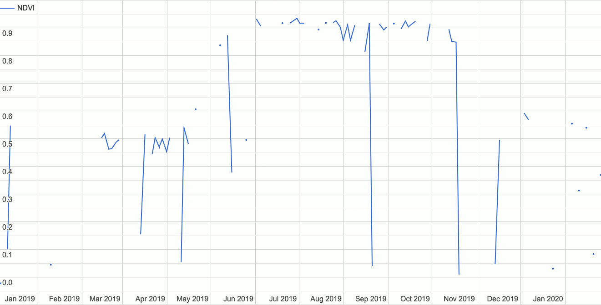

🌍🕰️GEEODE📈📉
A Google Earth Engine Implementation of Optimization by Differential Evolution

Summary
Do you commonly use time series data in Google Earth Engine (Henceforth: GEE) and are you interested in modelling these time series using mathematical functions of arbitrary forms (e.g., linear, exponential, logarithmic, etc.)? If so, consider GEEODE as an option for your task.
With geeode you can optimize any arbitrary close-formed alegbraic model on a time series image collection using a process called differential evolution. Various options exist to fine-tune the analysis, and accompanying statistics measuring the degree of optimization (i.e., "convergence" to a final model) can also be produced.
For full references and additional information, see the paper.
For questions please contact Devin Routh and/or Claudia Röösli with the University of Zürich Earth Observation Application and Services group.
Getting Started / Installation
The analytical functionality offered by geeode is available both via the Google Earth Engine Javascript Code Editor as well as by using the GEE Python Module.
To begin immediately, follow the quickstart.
Javascript
You can access the analytical functions of geeode simply by importing the native GEE module, like so:
Note: the Javascript implementation of geeode only includes the analytical functions and none of the helper functions (e.g., pause_and_wait).
Python
The Python implementation of geeode offers both the analytical functionality as well as the workflow functions.
To use geeode from Python, install it from source via: